Monstres
Indéfinitions des créatures imaginaires
"Rien dans la vie n'est à craindre, tout doit être compris.
C'est maintenant le moment de comprendre davantage, afin de craindre moins."
C'est maintenant le moment de comprendre davantage, afin de craindre moins."
-Marie Curie
Ulysse Bonduelle
Mémoire 2022
Mémoire 2022
Sous la direction
de Pierre Bourdareau
de Pierre Bourdareau
La crainte est une émotion comprise de manière universelle par les différentes cultures du monde;
et si les monstre sont par essence associés au sentiment de peur dans l’imaginaire collectif , il est intéressant de questionner
les raisons de cette association, dans une optique de mieux comprendre la relation que nous entretenons avec ces derniers.
Si cette phrase de Marie Curie ne se réfère pas ici directement à ces créatures, je trouve intéressant d’appliquer cette façon de penser aux monstres, des créatures ayant été conçues primairement à cet effet et qui semblent -au premier abord- appartenir plus au domaine des récits de fiction que de la science rationnelle.
Au travers de ce mémoire, je cherche à interroger le statut du monstre au moyen d’outils didactiques et de clés d’identifications,
présentés sous la forme de différentes explorations et cartographies interactives.
Ces modules sont le résultat de réflexions appliquées sur le sujet du monstre et sont donnés à voir au lecteur dans le but de le faire expérimenter alternativement autour de ce sujet et ainsi questionner les définitions préconçues que l’on donne au monstre.
Le cœur de ce mémoire ne vise donc pas à dresser un portrait type du monstre, qui le restreindrait à un seul carcan définitoire.
Aussi, plutôt que de me contenter de peindre le paysage de diversité que le monstre incarne, je cherche à aller plus loin et
explorer chacune des nombreuses facettes qui constituent ce sujet afin de valoriser la dimension qualitative du monstre,
par la recherche de lignes de compréhension formelles et de motifs narratifs formant un écosystème complexe.
Comme je le présente dans cette partie introductive, les différentes notions auquel le monstre se rattache semblent parfaitement interconnectées, pourtant chacune d’entre elles peut potentiellement être explorée indépendamment des autres. Ainsi, plutôt que de tenter d’élucider la question "qu’est ce qu’un monstre ?" dont la réponse semble en apparence si triviale, le travail présenté ici trouve son importance dans les détails et les nuances qui englobent ce terme et réside de ce fait dans l’indéfinition et l’ambiguïté du sujet.
Je cherche ainsi à rendre lisible la complexité du monstre au travers d’outils de vulgarisation, utilisant la classification au service du design graphique pour naviguer les bases de données ainsi que les compilations d’images et d'histoires qui englobent ce sujet.
Pour nous affranchir des idées préconçues, il nous faut d’abord les embrasser et analyser ce que nous savons des monstres.
Un monstre est défini comme un individu, dont les caractères physiques et/ou comportementaux s’éloignent de la norme. Cet écart que le monstre possède avec son environnement provoque alors souvent chez son observateur un sentiment de surprise, de peur et de fascination.
et si les monstre sont par essence associés au sentiment de peur dans l’imaginaire collectif , il est intéressant de questionner
les raisons de cette association, dans une optique de mieux comprendre la relation que nous entretenons avec ces derniers.
Si cette phrase de Marie Curie ne se réfère pas ici directement à ces créatures, je trouve intéressant d’appliquer cette façon de penser aux monstres, des créatures ayant été conçues primairement à cet effet et qui semblent -au premier abord- appartenir plus au domaine des récits de fiction que de la science rationnelle.
Au travers de ce mémoire, je cherche à interroger le statut du monstre au moyen d’outils didactiques et de clés d’identifications,
présentés sous la forme de différentes explorations et cartographies interactives.
Ces modules sont le résultat de réflexions appliquées sur le sujet du monstre et sont donnés à voir au lecteur dans le but de le faire expérimenter alternativement autour de ce sujet et ainsi questionner les définitions préconçues que l’on donne au monstre.
Le cœur de ce mémoire ne vise donc pas à dresser un portrait type du monstre, qui le restreindrait à un seul carcan définitoire.
Aussi, plutôt que de me contenter de peindre le paysage de diversité que le monstre incarne, je cherche à aller plus loin et
explorer chacune des nombreuses facettes qui constituent ce sujet afin de valoriser la dimension qualitative du monstre,
par la recherche de lignes de compréhension formelles et de motifs narratifs formant un écosystème complexe.
Comme je le présente dans cette partie introductive, les différentes notions auquel le monstre se rattache semblent parfaitement interconnectées, pourtant chacune d’entre elles peut potentiellement être explorée indépendamment des autres. Ainsi, plutôt que de tenter d’élucider la question "qu’est ce qu’un monstre ?" dont la réponse semble en apparence si triviale, le travail présenté ici trouve son importance dans les détails et les nuances qui englobent ce terme et réside de ce fait dans l’indéfinition et l’ambiguïté du sujet.
Je cherche ainsi à rendre lisible la complexité du monstre au travers d’outils de vulgarisation, utilisant la classification au service du design graphique pour naviguer les bases de données ainsi que les compilations d’images et d'histoires qui englobent ce sujet.
Pour nous affranchir des idées préconçues, il nous faut d’abord les embrasser et analyser ce que nous savons des monstres.
Un monstre est défini comme un individu, dont les caractères physiques et/ou comportementaux s’éloignent de la norme. Cet écart que le monstre possède avec son environnement provoque alors souvent chez son observateur un sentiment de surprise, de peur et de fascination.
Significations du Monstre
Étymologiquement, les langues latines donnent au monstre pour racine monstrum, qui signifie "avertissement, fléau ou signe divin ".
Monstrum dérive lui-même de moneo "avertir" et donne sous sa forme de verbe monstrare, "démontrer ou indiquer ".
Cette racine donnera le verbe monstrer en ancien français, qui deviendra à son tour montrer. Le monstre semble être par définition
exister pour être montré ou donné à voir, il est l’exception que l’on pointe du doigt dans une foule et qui éveille la curiosité humaine.
Le grec ancien se réfère au monstre par l’emploi du mot τέρας (téras) qui signifie "animal fabuleux, chose prodigieuse ".
Téras étant lui mème apparenté au tchèque čáry (cary) "sortilège " et à l’indo-européen commun kwer "faire, créer " signifiant proprement "créature ". Le monstre semble être ici défini par son appartenance au domaine de l’invention et du surnaturel, il est le sujet de fables ou de mythes et son existence même réside dans le fait qu’elle est contée au travers de récits.
Si cette racine semble au premier abord définir le monstre seulement sous son aspect fantastique, elle sera employée au courant du 18 ème siècle pour appeler la discipline scientifique de la tératologie. Τερατολογία, (teratologia), se traduisant littéralement par "récit fabuleux " et désignant en réalité la science qui consiste en le recensement et la classification des anomalies congénitales des êtres vivants
Cette pratique constituant les premiers pas de l’embryologie moderne que nous connaissons actuellement, Τέρας par conséquent appelle à deux registres très éloignés et le statut du monstre qu’elle définit oscille entre créature fantastique et objet de science.
En allemand enfin, le mot Ungerheuer dérive du vieil allemand ungehiuri (terrible, effrayant, fantomatique), composé de gehiuri (plaisant, gentil, harmonieux) et du suffixe négatif un-. Dans ce dernier cas, Ungerheuer définir le monstre de manière descriptive, le dépeignant comme antithèse du bien et de la justesse. L’étymologie allemande du monstre semble faire appel au sentiment instinctif de rejet que l’observateur ressent lorsqu’il est confronté à ce que l’on considère comme monstrueux.
Au travers de plusieurs problématiques, nous confronterons ces différentes définitions, et démontrant éventuellement par ce biais qu’elles ne permettent pas, à elles seules de dresser un aspect unilatéral du monstre.
Inversement, nous analyserons certaines incohérences entourant ce sujet qui, du fait de leur existence, engagent à le dépeindre comme une figure devant être observée au travers d’un spectre.
Monstrum dérive lui-même de moneo "avertir" et donne sous sa forme de verbe monstrare, "démontrer ou indiquer ".
Cette racine donnera le verbe monstrer en ancien français, qui deviendra à son tour montrer. Le monstre semble être par définition
exister pour être montré ou donné à voir, il est l’exception que l’on pointe du doigt dans une foule et qui éveille la curiosité humaine.
Le grec ancien se réfère au monstre par l’emploi du mot τέρας (téras) qui signifie "animal fabuleux, chose prodigieuse ".
Téras étant lui mème apparenté au tchèque čáry (cary) "sortilège " et à l’indo-européen commun kwer "faire, créer " signifiant proprement "créature ". Le monstre semble être ici défini par son appartenance au domaine de l’invention et du surnaturel, il est le sujet de fables ou de mythes et son existence même réside dans le fait qu’elle est contée au travers de récits.
Si cette racine semble au premier abord définir le monstre seulement sous son aspect fantastique, elle sera employée au courant du 18 ème siècle pour appeler la discipline scientifique de la tératologie. Τερατολογία, (teratologia), se traduisant littéralement par "récit fabuleux " et désignant en réalité la science qui consiste en le recensement et la classification des anomalies congénitales des êtres vivants
Cette pratique constituant les premiers pas de l’embryologie moderne que nous connaissons actuellement, Τέρας par conséquent appelle à deux registres très éloignés et le statut du monstre qu’elle définit oscille entre créature fantastique et objet de science.
En allemand enfin, le mot Ungerheuer dérive du vieil allemand ungehiuri (terrible, effrayant, fantomatique), composé de gehiuri (plaisant, gentil, harmonieux) et du suffixe négatif un-. Dans ce dernier cas, Ungerheuer définir le monstre de manière descriptive, le dépeignant comme antithèse du bien et de la justesse. L’étymologie allemande du monstre semble faire appel au sentiment instinctif de rejet que l’observateur ressent lorsqu’il est confronté à ce que l’on considère comme monstrueux.
Au travers de plusieurs problématiques, nous confronterons ces différentes définitions, et démontrant éventuellement par ce biais qu’elles ne permettent pas, à elles seules de dresser un aspect unilatéral du monstre.
Inversement, nous analyserons certaines incohérences entourant ce sujet qui, du fait de leur existence, engagent à le dépeindre comme une figure devant être observée au travers d’un spectre.
Le Monstre, sujet pictural ou littéraire?
Le monstre est celui que l’on pointe du doigt et que l’on remarque du fait de ses différences, toutefois il se définit aussi comme une créature appartenant au monde des contes et légendes.
Ces deux facteurs peuvent sembler conflictuels, en effet comment peut-on proprement montrer une chose n’existant que dans un registre imaginaire, hormis par représentation picturale?
L’illustration comme outil de représentation semble être le seul compromis possible que nous avons trouvé pour répondre au désir de montrer réellement ces créatures issues exclusivement de récits fictifs.
Cependant, du fait de n’avoir aucun modèle réel sur lequel se baser, cet outil trouve ses limites lorsqu’il il est question de maintenir une cohérence entre les différentes dépictions d’un monstre.
Si l’on considère pour exemple ces trois représentations de dragon, un monstre universellement présent dans les différentes
mythologies du globe, on remarque des différences fondamentales dans la manière dont chacun est représenté.
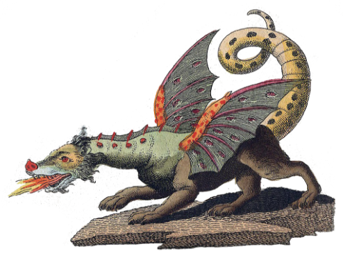
Ces deux facteurs peuvent sembler conflictuels, en effet comment peut-on proprement montrer une chose n’existant que dans un registre imaginaire, hormis par représentation picturale?
L’illustration comme outil de représentation semble être le seul compromis possible que nous avons trouvé pour répondre au désir de montrer réellement ces créatures issues exclusivement de récits fictifs.
Cependant, du fait de n’avoir aucun modèle réel sur lequel se baser, cet outil trouve ses limites lorsqu’il il est question de maintenir une cohérence entre les différentes dépictions d’un monstre.
Si l’on considère pour exemple ces trois représentations de dragon, un monstre universellement présent dans les différentes
mythologies du globe, on remarque des différences fondamentales dans la manière dont chacun est représenté.
 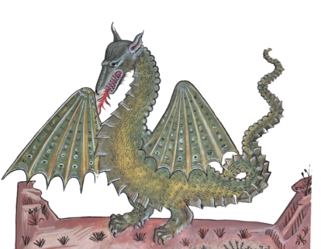
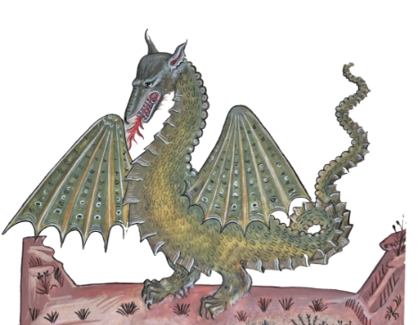
Reproduction de la gravure du Draco Aethiopius,
de Ulisse Aldrovandi, Historiae naturalis: De serpentibus de Johannes Jonstonus Amsterdam (1657)
de Ulisse Aldrovandi, Historiae naturalis: De serpentibus de Johannes Jonstonus Amsterdam (1657)
Reproduction de l'enluminure du grand dragon,
paru dans le Tacuinum Sanitaris, Milan, (XIIIeme S.)
paru dans le Tacuinum Sanitaris, Milan, (XIIIeme S.)
Dragon européen cracheur de feu,
gravure de Friedrich Justin Bertuch, (1806)
gravure de Friedrich Justin Bertuch, (1806)
Illustration de Henry Justice Ford,
The adventure with scylla, dans Tales of Troy and Greece d'Andrew Lang (1907)
The adventure with scylla, dans Tales of Troy and Greece d'Andrew Lang (1907)
Scylla dévore six compagnons d'Ulysse,
Peinture de Styka Jan, (1922-1927)
Illustration de l'Odyssée d'Homère
Peinture de Styka Jan, (1922-1927)
Illustration de l'Odyssée d'Homère
Figurine de scylla en bronze
Musée national d'archéologie d'Athènes
IVème S. av JC.
Musée national d'archéologie d'Athènes
IVème S. av JC.
La définition du dragon est largement acceptée comme étant une immense créature ailée aux griffes de lion et à la queue de reptile.
Ces trois représentations respectent chacune ces caractéristiques, mais présentent aussi de grandes différences morphologiques avec
chacune d’entre elles, comme la forme du corps, le nombre de membres ou la position des ailes.
On peut se poser la question du moyen le plus judicieux de présenter le monstre: bien que plus justement défini par sa description écrite, ces dernières -aussi précises soient elles- ne permettent pas de montrer à proprement dit le monstre, mais seulement de lister les caractéristiques physiques et comportementales que présente ce dernier. Ces descriptions ne trouvent leur utilité que dans l’éventualité, en outre improbable, où l’observateur serait confronté à rencontrer un monstre et chercherait à l’identifier à la manière d'un zoologiste.
L’illustration, de son côté, est tellement libre du fait de la nature imaginaire de son sujet qu’il peut paraître difficile de reconnaître hors contexte certains monstres interprétés par différents artistes.
Si l’on prend l’exemple de Scylla, une femme transformée en monstre marin se dressant sur la route d’Ulysse, on remarque une forte
disparité dans l’apparence des interprétations de cette dernière, produites d'après la description qui en est faite dans L'Odyssée d'Homère.
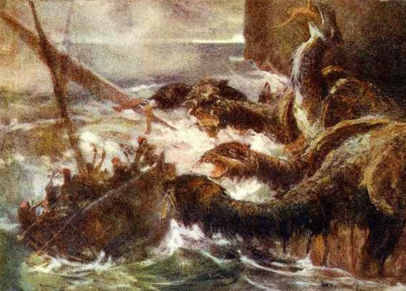
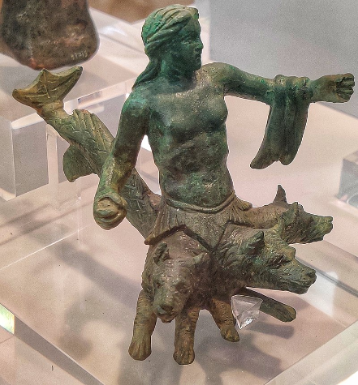
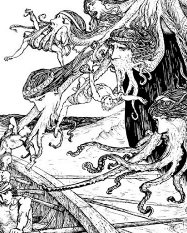
Ces trois représentations respectent chacune ces caractéristiques, mais présentent aussi de grandes différences morphologiques avec
chacune d’entre elles, comme la forme du corps, le nombre de membres ou la position des ailes.
On peut se poser la question du moyen le plus judicieux de présenter le monstre: bien que plus justement défini par sa description écrite, ces dernières -aussi précises soient elles- ne permettent pas de montrer à proprement dit le monstre, mais seulement de lister les caractéristiques physiques et comportementales que présente ce dernier. Ces descriptions ne trouvent leur utilité que dans l’éventualité, en outre improbable, où l’observateur serait confronté à rencontrer un monstre et chercherait à l’identifier à la manière d'un zoologiste.
L’illustration, de son côté, est tellement libre du fait de la nature imaginaire de son sujet qu’il peut paraître difficile de reconnaître hors contexte certains monstres interprétés par différents artistes.
Si l’on prend l’exemple de Scylla, une femme transformée en monstre marin se dressant sur la route d’Ulysse, on remarque une forte
disparité dans l’apparence des interprétations de cette dernière, produites d'après la description qui en est faite dans L'Odyssée d'Homère.
Takiyasha la sorcière et le fantôme du squelette,
Utagawa Kuniyoshi, Victoria and Albert Museum
Impression sur bois en tryptique, (1844)
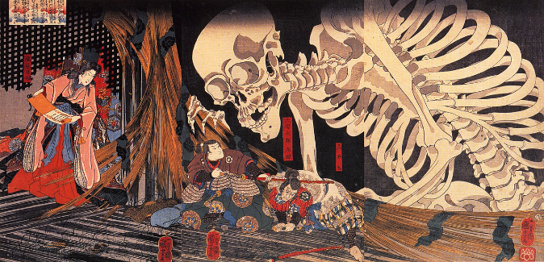
Utagawa Kuniyoshi, Victoria and Albert Museum
Impression sur bois en tryptique, (1844)
Le Minotaure, George Frederic Watts
Tate collection, Londres
Huile sur toile (1885)
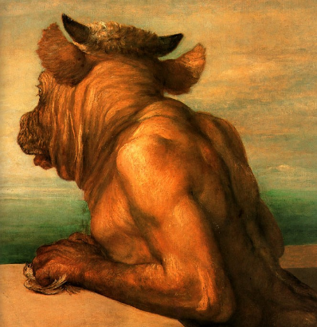
Tate collection, Londres
Huile sur toile (1885)
On distingue deux catégories de texte traitant des monstres:
Les textes mythologiques qui, comme leur nom le suggère, sont à visée fictive et
les écrits tératologiques basés sur des observations réelles d’anomalies médicales.
Ces deux typologies du monstrueux, appartenant à des registres narratifs bien différents, présentent néanmoins certaines similitudes et nous pouvons établir plusieurs ponts entre ces deux disciplines.
En premier lieu, qu’il s’agisse d’un monstre mythologique ou tératologique,
ce dernier est toujours défini par un nom et une description physique.
La manière dont le monstre est nommé fait office dans une certaine mesure d’amorce descriptive, il contribue à faciliter l’association entre sa description et les représentations physiques que l’on en fait.
Les noms des monstres mythologiques font souvent appel à des éléments contextuels et servent à replacer la créature au sein du mythe dont il est issu tout en maintenant une part de mystère dans le but de garder une audience captivée.
Le nom du minotaure par exemple, associe le nom du roi de Crète Minos à l’animal du taureau.
Se traduisant par le "Taureau de Minos" on suppose sans plus d’information qu’il s’agit d’une créature aux traits bovins dont l’existence est liée de quelconque façon à ce roi.
Un autre exemple peut être celui du Gashadokuro japonais, dont le nom se traduit littéralement par "squelette affamé" et suggère les intentions
prédatrices de ce monstre squelettique.
Les textes mythologiques qui, comme leur nom le suggère, sont à visée fictive et
les écrits tératologiques basés sur des observations réelles d’anomalies médicales.
Ces deux typologies du monstrueux, appartenant à des registres narratifs bien différents, présentent néanmoins certaines similitudes et nous pouvons établir plusieurs ponts entre ces deux disciplines.
En premier lieu, qu’il s’agisse d’un monstre mythologique ou tératologique,
ce dernier est toujours défini par un nom et une description physique.
La manière dont le monstre est nommé fait office dans une certaine mesure d’amorce descriptive, il contribue à faciliter l’association entre sa description et les représentations physiques que l’on en fait.
Les noms des monstres mythologiques font souvent appel à des éléments contextuels et servent à replacer la créature au sein du mythe dont il est issu tout en maintenant une part de mystère dans le but de garder une audience captivée.
Le nom du minotaure par exemple, associe le nom du roi de Crète Minos à l’animal du taureau.
Se traduisant par le "Taureau de Minos" on suppose sans plus d’information qu’il s’agit d’une créature aux traits bovins dont l’existence est liée de quelconque façon à ce roi.
Un autre exemple peut être celui du Gashadokuro japonais, dont le nom se traduit littéralement par "squelette affamé" et suggère les intentions
prédatrices de ce monstre squelettique.
Comment donner sens aux monstres?
Ces noms servent d’accroches narratives, résumant sommairement la place que va tenir le monstre dans l’histoire avant qu’elle soit contée.
Un nom mémorable permet d’intriguer le spectateur et incite ceux qui ne la connaissent pas à écouter les légendes traitants de la créature en question.
La nomenclature tératologique, proposée par Isidore Geoffroy St Hilaire dans son "histoire générale et particulière des anomalies de l’organisation chez l’homme et les animaux" est employée pour définir les différents types de difformités du vivant.
Les mots qu’elle emploie sont composés d’une centaine de racines grecques ou latines, qui s’articulent de manière à construire un nom décrivant l’aspect que présente l’individu présentant le cas tératologique en question.
Un individu Phocomèle , Du grec ancien φώκη, phốkê "phoque" et μέλος, mélos "membre" désigne ainsi un individu chez lequel les pieds et les mains paraissent exister seuls et s'insèrent immédiatement sur le tronc comme chez les phoques.
Un individu podencéphale, Du grec ancien ποδός podos "pied" et ἐγκέφαλος enkefalos "cerveau" sert à désigner un individu dont le cerveau, situé hors du crâne, est porté sur une sorte de pédoncule.
Bien plus explicites et moins mystérieux, les termes employés en tératologie suivent une logique destinée à classifier les anomalies produites par le vivant.
Le mythe ne semble pas avoir sa place dans les appellations tératologiques puisque cette science existe justement afin de donner une logique d’organisation des formes rares (mais non uniques) que prennent parfois les corps vivants.
Un nom mémorable permet d’intriguer le spectateur et incite ceux qui ne la connaissent pas à écouter les légendes traitants de la créature en question.
La nomenclature tératologique, proposée par Isidore Geoffroy St Hilaire dans son "histoire générale et particulière des anomalies de l’organisation chez l’homme et les animaux" est employée pour définir les différents types de difformités du vivant.
Les mots qu’elle emploie sont composés d’une centaine de racines grecques ou latines, qui s’articulent de manière à construire un nom décrivant l’aspect que présente l’individu présentant le cas tératologique en question.
Un individu Phocomèle , Du grec ancien φώκη, phốkê "phoque" et μέλος, mélos "membre" désigne ainsi un individu chez lequel les pieds et les mains paraissent exister seuls et s'insèrent immédiatement sur le tronc comme chez les phoques.
Un individu podencéphale, Du grec ancien ποδός podos "pied" et ἐγκέφαλος enkefalos "cerveau" sert à désigner un individu dont le cerveau, situé hors du crâne, est porté sur une sorte de pédoncule.
Bien plus explicites et moins mystérieux, les termes employés en tératologie suivent une logique destinée à classifier les anomalies produites par le vivant.
Le mythe ne semble pas avoir sa place dans les appellations tératologiques puisque cette science existe justement afin de donner une logique d’organisation des formes rares (mais non uniques) que prennent parfois les corps vivants.
Monstre ectromèle phocomèle d'après Ambroise Paré
Dictionnaire populaire de médecine usuelle, tome 1
Labarthe, Paul (1887) Musée Dupuytren
Dictionnaire populaire de médecine usuelle, tome 1
Labarthe, Paul (1887) Musée Dupuytren
Planche de podencéphale issue de : Geoffroy Saint-Hilaire (Étienne), Philosophie anatomique. Des monstruosités..., Paris : Méquignon-Marvis, 1822, pl. VI. Dessin de Huet, gravure de De Plée père.
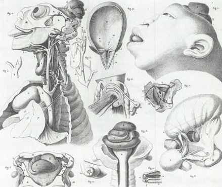
Cependant, mythologie et tératologie communiquent à bien des niveaux et si la tératologie n’est apparue qu’au courant du 18eme siècle, les individus présentant des anomalies morphologiques sont référencés depuis l’antiquité dans de nombreuses mythologies.
Nains ou géants, créatures à têtes multiples comme l’hydre ou à membres manquants comme les sciapodes, tous trouvent leur place dans la classification tératologique de Saint-hilaire. De plus, certains termes tératologiques comme la cyclocéphalie ou la sirénomélie tirent leur nomenclature directement de figures mythologiques comme le cyclope Polyphème ou les sirènes nordiques.
Nains ou géants, créatures à têtes multiples comme l’hydre ou à membres manquants comme les sciapodes, tous trouvent leur place dans la classification tératologique de Saint-hilaire. De plus, certains termes tératologiques comme la cyclocéphalie ou la sirénomélie tirent leur nomenclature directement de figures mythologiques comme le cyclope Polyphème ou les sirènes nordiques.
Mythologies comme tératologies partagent un objectif commun: Donner sens au monstre, par le vecteur de la fiction ou de la science.
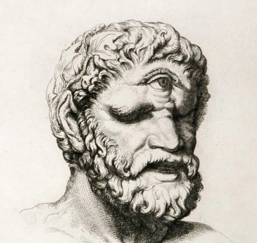
 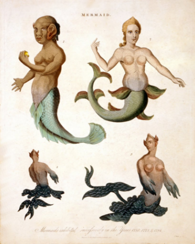
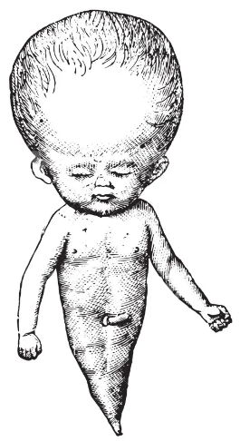
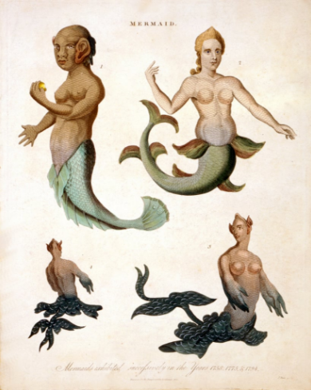
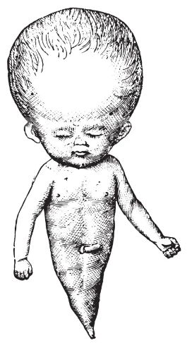
A gauche: Tête de Polyphème par Johann Heinrich Wilhelm Tischbein
1801, d’après une sculpture originale du 2e siècle av. J.-C.
A droite: Un enfant avec un œil central
dans Anomalies and curiosities of medicine de G.M. Gould and W.L. Pyle, 1896
1801, d’après une sculpture originale du 2e siècle av. J.-C.
A droite: Un enfant avec un œil central
dans Anomalies and curiosities of medicine de G.M. Gould and W.L. Pyle, 1896
A gauche: Sirènes, gravure colorée par J.Pass
dans Encycloapedia Londinensis, 1817
A droite: Gravure d'un enfant sirénomèle,
Dictionnaire populaire de médecine usuelle d'hygiène publique et privée par le Dr.Paul Labarthe, 1885
dans Encycloapedia Londinensis, 1817
A droite: Gravure d'un enfant sirénomèle,
Dictionnaire populaire de médecine usuelle d'hygiène publique et privée par le Dr.Paul Labarthe, 1885
Ainsi, nous percevons les caractères tératologiques de différentes
façons dépendant du type d’individu qui les présente.
Un excellent exemple illustrant l'attraction que nous éprouvons face aux anomalies pourrait être représenté par celui du trèfle à quatre feuilles.
Cette forme rare que présente parfois le trèfle blanc (Trifolium repens) est provoquée par une mutation rare et aléatoire, provoquant chez certains spécimens l’apparition d’une foliole supplémentaire accompagnéé d'une légère déformation de chacune de ces folioles en une forme rappelant un cœur.
Nous attribuons à la rareté de ces spécimens des propriétés de porte-bonheur et cette forme tératologique est si populaire que sa symbolique est reconnue de manière internationale.
façons dépendant du type d’individu qui les présente.
Un excellent exemple illustrant l'attraction que nous éprouvons face aux anomalies pourrait être représenté par celui du trèfle à quatre feuilles.
Cette forme rare que présente parfois le trèfle blanc (Trifolium repens) est provoquée par une mutation rare et aléatoire, provoquant chez certains spécimens l’apparition d’une foliole supplémentaire accompagnéé d'une légère déformation de chacune de ces folioles en une forme rappelant un cœur.
Nous attribuons à la rareté de ces spécimens des propriétés de porte-bonheur et cette forme tératologique est si populaire que sa symbolique est reconnue de manière internationale.
Un spécimen de trèfle blanc (Trifolium repens) à quatre folioles
au milieu de spécimens normaux à trois folioles.
au milieu de spécimens normaux à trois folioles.
Que voyons-nous dans les monstres?
Pourquoi l’observation de caractères étrangers et incohérents présentés par des spécimens humains ou animaux provoque-t'il chez nous un sentiment de surprise et de malaise, tout en suscitant dans de nombreux cas de l'intérêt et de la fascination?
Dans sa phénoménologie des corps monstrueux, Pierre Ancet analyse de manière très juste le sentiment que nous ressentons face aux
anomalies du vivant: "Le problème du monstre serait moins délicat s'il s'appliquait aux êtres vivants sans concerner l'homme. Contempler une collection d'insectes ou de plantes tératologiques ne heurte pas le regard. Il en va tout autrement lorsque les êtres difformes se rapprochent du corps de l'observateur."
Dans sa phénoménologie des corps monstrueux, Pierre Ancet analyse de manière très juste le sentiment que nous ressentons face aux
anomalies du vivant: "Le problème du monstre serait moins délicat s'il s'appliquait aux êtres vivants sans concerner l'homme. Contempler une collection d'insectes ou de plantes tératologiques ne heurte pas le regard. Il en va tout autrement lorsque les êtres difformes se rapprochent du corps de l'observateur."
Il en va de même pour les caractères tératologiques que nous sélectionnons volontairement : ainsi nous attribuons une certaine valeur à divers spécimens de plantes et d’animaux apprivoisés et modifiés pour présenter des caractère tératologiques précis, comme certaines
plantes et animaux atteint de nanismes dont leurs anomalies sont provoquées ou conservées à visée esthétique.
plantes et animaux atteint de nanismes dont leurs anomalies sont provoquées ou conservées à visée esthétique.
Par l'utilisation de croisement ou du génie génétique, nous sommes capables d'isoler des monstruosités produites par la nature et les reproduire pour notre propre utilisation.
Similairement au trèfle à quatre feuilles, la digitale pourpre monstrueuse (Digitalis purpurea Monstrosa) est une variété de fleur présentant une mutation spectaculaire de sa fleur terminale.
Les formes monstrueuses ne sont ainsi pas uniquement d'ordres naturelles
et nous avons appris à les apprivoiser et les contrôler à visée esthétique.
L’art des bonsaïs, arbres miniatures originaires de Chine implique une modification de la plante par une série de différentes techniques, allant de l’amputation de branches à la contrainte du tronc par ligature,
jusqu’à l’obtention d’une morphologie complètement artificielle de la plante .
Il en est de même pour les animaux miniatures, caractérisés à tort comme individus nains, ces derniers ne présentent pas toujours d’anomalie du développement osseux mais sont la résultante de sélections artificielle de gènes spécifiques, rappelant les formes provoquées par le nanisme.
Pour ne citer qu’un exemple parmi tant d’autres, la race de chat Munchkin se caractérise par des pattes très courtes, dû à une achondroplasie, ou mutation génétique du développement des membres sélectionnée par croisement.
Cette forme tératologique, pourtant très proche du cas de phocomélie vu plus haut chez l'humain est sélectionné ici volontairement chez le chat pour des raisons esthétiques, ce caractère étant perçu par certains comme mignon.
Similairement au trèfle à quatre feuilles, la digitale pourpre monstrueuse (Digitalis purpurea Monstrosa) est une variété de fleur présentant une mutation spectaculaire de sa fleur terminale.
Les formes monstrueuses ne sont ainsi pas uniquement d'ordres naturelles
et nous avons appris à les apprivoiser et les contrôler à visée esthétique.
L’art des bonsaïs, arbres miniatures originaires de Chine implique une modification de la plante par une série de différentes techniques, allant de l’amputation de branches à la contrainte du tronc par ligature,
jusqu’à l’obtention d’une morphologie complètement artificielle de la plante .
Il en est de même pour les animaux miniatures, caractérisés à tort comme individus nains, ces derniers ne présentent pas toujours d’anomalie du développement osseux mais sont la résultante de sélections artificielle de gènes spécifiques, rappelant les formes provoquées par le nanisme.
Pour ne citer qu’un exemple parmi tant d’autres, la race de chat Munchkin se caractérise par des pattes très courtes, dû à une achondroplasie, ou mutation génétique du développement des membres sélectionnée par croisement.
Cette forme tératologique, pourtant très proche du cas de phocomélie vu plus haut chez l'humain est sélectionné ici volontairement chez le chat pour des raisons esthétiques, ce caractère étant perçu par certains comme mignon.
Un spécimen de digitale pourpre à fleur terminale "monstrueuse".
Chat domestique (Félis catus)
de race Munchkin à pattes courtes
de race Munchkin à pattes courtes
Bonsaï de Mélèze (Larix Sp.)
Le principe de sélectionner et provoquer volontairement l'apparition d' anomalies chez les êtres vivants dans le but d'obtenir des formes précises auprès différents spécimens se rattache directement à la pratique scientifique de la tératogenèse expérimentale, une discipline grandement développée par le zoologiste Camille Dareste dans ses Recherches sur la production artificielle des monstruosités publié en 1891, cherchant à déterminer les causes des anomalies présentées dans la classification tératologiques d'Isidore Geoffroy St-hilaire.
Nous avons vu que l'anomalie présente un fort pouvoir attractif, ainsi il peut paraitre paradoxal que nous associons au concept du monstre
et de peur les anomalies présentées par nos semblables au lieu de les célébrer de la même manière que celles observées précédemment.
Pierre Ancet exprime dans son ouvrage que la manière dont nous percevons les corps humains dits "monstrueux" a pour effet de nous choquer par l’ambiguïté de leur apparence, à la fois proche de l’humain sans l’être totalement. D’une manière générale, si les anomalies présentées par des espèces plus éloignées de la nôtre ont le potentiel de nous fasciner, sans pour autant déclencher un sentiment de rejet, ce dernier se précise d’avantage à mesure que le corps du sujet présentant ces caractères anomaliques s’approche morphologiquement de celui de l’observateur.
le rejet que nous éprouvons lors de l'observation d'anomalies humaines pourrait s'expliquer par une réaction instinctive de survie héritée de nos ancêtres primitifs. La reconnaissance d'évènements inconnus et leur association à une situation dangereuse est un mécanisme de survie que de nombreuses espèces animales ont développé au cours de milliers d’années d’évolution et si nous n’avons plus à nous défendre contre des prédateurs sauvages dans notre société moderne, notre cerveau n’a pas perdu pour autant les réflexes qui nous ont permis d’en arriver là.
Plutôt que de devoir affronter le danger, il est ainsi plus prudent de savoir le reconnaître.
Des études ont prouvé que notre esprit excelle dans la recognition et l’analyse de modèles et que, dès l’âge de cinq ans, les enfants sont capables de reconnaître et traiter les visages des personnes qu’ils rencontrent. Par ce même biais évolutif, cette faculté nous permet de reconnaître facilement nos proches et inversement permet d'analyser tout trait non familier que pourrais présenter un autre individu.
Il paraît immoral de faire subir le même traitement à un autre être humain que celui infligé aux plantes et animaux observés plus haut. Pourtant si les règles d’éthiques dictées par notre société nous interdisent d’attenter à l’intégrité morphologique du corps de nos semblables, les anomalies naturelles observées chez certains individus humains ont longtemps fasciné le public, que ce soit par curiosité scientifique ou seulement à visée de divertissement malsain et discriminatoire.
Nous avons vu que l'anomalie présente un fort pouvoir attractif, ainsi il peut paraitre paradoxal que nous associons au concept du monstre
et de peur les anomalies présentées par nos semblables au lieu de les célébrer de la même manière que celles observées précédemment.
Pierre Ancet exprime dans son ouvrage que la manière dont nous percevons les corps humains dits "monstrueux" a pour effet de nous choquer par l’ambiguïté de leur apparence, à la fois proche de l’humain sans l’être totalement. D’une manière générale, si les anomalies présentées par des espèces plus éloignées de la nôtre ont le potentiel de nous fasciner, sans pour autant déclencher un sentiment de rejet, ce dernier se précise d’avantage à mesure que le corps du sujet présentant ces caractères anomaliques s’approche morphologiquement de celui de l’observateur.
le rejet que nous éprouvons lors de l'observation d'anomalies humaines pourrait s'expliquer par une réaction instinctive de survie héritée de nos ancêtres primitifs. La reconnaissance d'évènements inconnus et leur association à une situation dangereuse est un mécanisme de survie que de nombreuses espèces animales ont développé au cours de milliers d’années d’évolution et si nous n’avons plus à nous défendre contre des prédateurs sauvages dans notre société moderne, notre cerveau n’a pas perdu pour autant les réflexes qui nous ont permis d’en arriver là.
Plutôt que de devoir affronter le danger, il est ainsi plus prudent de savoir le reconnaître.
Des études ont prouvé que notre esprit excelle dans la recognition et l’analyse de modèles et que, dès l’âge de cinq ans, les enfants sont capables de reconnaître et traiter les visages des personnes qu’ils rencontrent. Par ce même biais évolutif, cette faculté nous permet de reconnaître facilement nos proches et inversement permet d'analyser tout trait non familier que pourrais présenter un autre individu.
Il paraît immoral de faire subir le même traitement à un autre être humain que celui infligé aux plantes et animaux observés plus haut. Pourtant si les règles d’éthiques dictées par notre société nous interdisent d’attenter à l’intégrité morphologique du corps de nos semblables, les anomalies naturelles observées chez certains individus humains ont longtemps fasciné le public, que ce soit par curiosité scientifique ou seulement à visée de divertissement malsain et discriminatoire.
Les exemples de Joseph Carrey Merrick, plus connu par son nom de scène The Elephant Man ou encore Saartjie Baartman, la Vénus hottentote sont tous deux des individus ayant ont marqué les esprits par leurs corps aux formes uniques et insolites.
D’abord exposés au public dans des foires humaines, ces deux personnes ont aussi su fasciner le milieu scientifique et politique.
Cherchant à donner du sens à ces anomalies, certains tentèrent du moins dans le cas de Joseph Merrick, de redonner leur humanité à ces gens perçus par la société comme des monstres par la vulgarisation et la normalisation de leurs conditions.
Bien malheureusement, dans le cas de Saartjie Baartman, le milieu politique profita de cette anomalie pour appuyer ses idéaux racistes, populaires à l'époque coloniale, utilisant comme prétexte le cas de sa difformité comme preuve de l'infériorité des populations d'Afrique.
D’abord exposés au public dans des foires humaines, ces deux personnes ont aussi su fasciner le milieu scientifique et politique.
Cherchant à donner du sens à ces anomalies, certains tentèrent du moins dans le cas de Joseph Merrick, de redonner leur humanité à ces gens perçus par la société comme des monstres par la vulgarisation et la normalisation de leurs conditions.
Bien malheureusement, dans le cas de Saartjie Baartman, le milieu politique profita de cette anomalie pour appuyer ses idéaux racistes, populaires à l'époque coloniale, utilisant comme prétexte le cas de sa difformité comme preuve de l'infériorité des populations d'Afrique.
Puisque l'histoire de chacun de ces individus a été adaptée en œuvre cinématographique, il est intéressant de s'attarder sur le domaine du septième art, où les personnages sortant de la norme semblent avoir trouvé leur place et ont su captiver un public important.
Si le terme de monstre ne devrait aucunement être utilisé pour qualifier un être humain réel, nous nous autorisons une fascination pour les monstres imaginaires du fait de leur nature fictive, auxquels nous ne sommes confrontés qu’au travers de textes, d’images ou d’écrans.
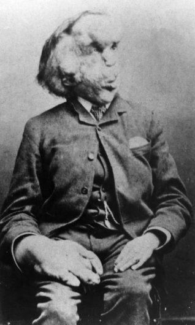
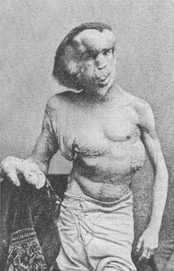
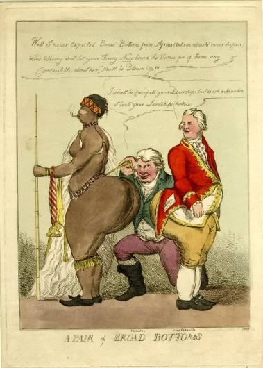
Si le terme de monstre ne devrait aucunement être utilisé pour qualifier un être humain réel, nous nous autorisons une fascination pour les monstres imaginaires du fait de leur nature fictive, auxquels nous ne sommes confrontés qu’au travers de textes, d’images ou d’écrans.
Photographies de Joseph Merrick, un an avant sa mort en 1889
Photographie et carricature de Saartjie Baartman, 1810
Histoires d'épouvantes, entre fascination et répulsion
Dans Le cinéma d’horreur et ses figures, Eric Dufour analyse comment ce genre cinématographique pourtant si souvent décrié compte parmi ses réalisateurs des pointures ayant su maîtriser les différentes typologies de l’horreur. Des oiseaux tueurs d’Alfred Hitchcock aux zombies de George Romero, on retrouve dans le cinéma une diversité impressionnante de monstres, déclinant le genre de l’épouvante en une multitude de facettes stylistiques.
Si les films d'horreur sont si populaires, cela est en partie dû au fait que cette expérience audiovisuelle nous permet de rechercher activement le frisson du danger sans pour autant se retrouver confronté aux conséquences désastreuses qu’une rencontre avec un véritable monstre pourrait avoir. En accord avec la théorie selon laquelle le monstre fait appel à notre instinct de survie, nous renseigner sur ces créatures nous fait nous sentir plus instruits et préparés à l’improbable éventualité où nous nous retrouvions à la place des adolescents du film Vendredi 13.
Si les films d'horreur sont si populaires, cela est en partie dû au fait que cette expérience audiovisuelle nous permet de rechercher activement le frisson du danger sans pour autant se retrouver confronté aux conséquences désastreuses qu’une rencontre avec un véritable monstre pourrait avoir. En accord avec la théorie selon laquelle le monstre fait appel à notre instinct de survie, nous renseigner sur ces créatures nous fait nous sentir plus instruits et préparés à l’improbable éventualité où nous nous retrouvions à la place des adolescents du film Vendredi 13.
Au cinéma, nous préférons parfois que le monstre
nous soit suggéré plutôt que donné à voir.
La validité de cet argument, popularisé par les aficionados de films d’horreur
selon lequel la figure du monstre perds de son côté énigmatique si elle est
présentée à l’écran de manière trop brusquée, dépend en réalité grandement du genre de film dans lequel apparaît le monstre et du ressenti que le réalisateur veut que ce dernier imprime sur son spectateur.
Notre rapport au monstre d’épouvante est ambigu, oscillant entre une stupeur malaisante quand nous le voyons et une angoisse croissante chaque seconde où il
ne figure pas à l’écran.
Reprenant la question de l'importance ou non de la représentation picturale du monstre, nous distinguons deux types de créatures du cinéma d'horreur:
Le monstre visuel et le monstre suggéré
nous soit suggéré plutôt que donné à voir.
La validité de cet argument, popularisé par les aficionados de films d’horreur
selon lequel la figure du monstre perds de son côté énigmatique si elle est
présentée à l’écran de manière trop brusquée, dépend en réalité grandement du genre de film dans lequel apparaît le monstre et du ressenti que le réalisateur veut que ce dernier imprime sur son spectateur.
Notre rapport au monstre d’épouvante est ambigu, oscillant entre une stupeur malaisante quand nous le voyons et une angoisse croissante chaque seconde où il
ne figure pas à l’écran.
Reprenant la question de l'importance ou non de la représentation picturale du monstre, nous distinguons deux types de créatures du cinéma d'horreur:
Le monstre visuel et le monstre suggéré
Image du film Der Golem (1915) de Paul Wegener,
Un des premiers films de monstres de l'histoire du cinéma.
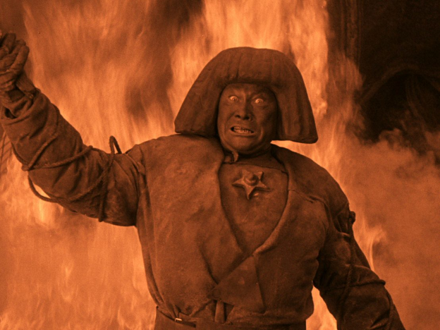
Un des premiers films de monstres de l'histoire du cinéma.
Affiche japonaise Du film Gojira, 1954
Suggestion et Dévoilement du monstre
Le monstre dit visuel est destiné à apparaître à l’écran, il est là pour être observé et faire forte impression par la forme sous laquelle il nous est présenté.
Encore ici on différencie plusieurs types de monstres visuels: La Chose du film The Thing de John Carpenter et L’immense saurien Godzilla du film éponyme d’Ishirō Honda sont tous deux des monstres destinés à être dévoilés au spectateur. Pourtant chacun est porteur d'un message différent, choisi par le réalisateur et se traduisant au travers des formes qu'ils arborent respectivement.
Le géant Godzilla incarne le côté spectaculaire du monstre, une force incontestable de la nature terrorisant les humains minuscules et impuissants
face à son immense carrure et son souffle atomique.
La Chose au contraire choque par son côté imprévisible, cette créature s’immisçant dans la population en endossant une forme familière,
avant de muter brutalement en un amas de chair agressive et difforme.
Chacun de ces monstres articulent très justement les peurs présentes à l’époque où leurs films ont été produits: le pouvoir destructeur de Godzilla sur la ville japonaise de Tokyo étant une allégorie du désastre nucléaire causé par l’armée américaine durant la seconde guerre mondiale tandis que La Chose, inspire le malaise ressenti par l’infiltration d’espions soviétiques sur le territoire américain durant la guerre froide, comme un loup en habit d’agneau.
Le monstre est pensé avant tout pour servir un narratif, pouvant être comparé à n'importe quel objet utilitaire, les formes que l’on donne à ces créatures répondent à une fonction de convier un message de manière adéquate.
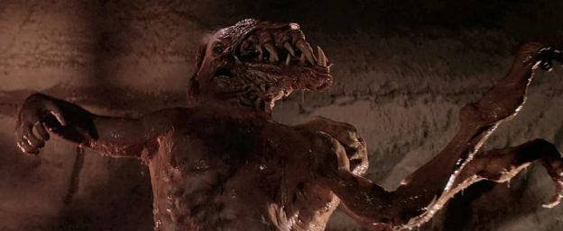
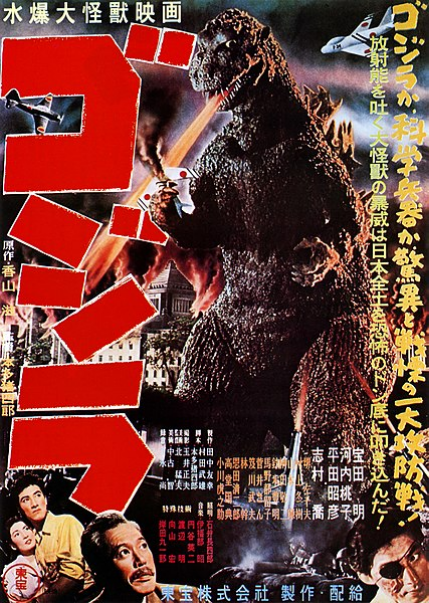
Encore ici on différencie plusieurs types de monstres visuels: La Chose du film The Thing de John Carpenter et L’immense saurien Godzilla du film éponyme d’Ishirō Honda sont tous deux des monstres destinés à être dévoilés au spectateur. Pourtant chacun est porteur d'un message différent, choisi par le réalisateur et se traduisant au travers des formes qu'ils arborent respectivement.
Le géant Godzilla incarne le côté spectaculaire du monstre, une force incontestable de la nature terrorisant les humains minuscules et impuissants
face à son immense carrure et son souffle atomique.
La Chose au contraire choque par son côté imprévisible, cette créature s’immisçant dans la population en endossant une forme familière,
avant de muter brutalement en un amas de chair agressive et difforme.
Chacun de ces monstres articulent très justement les peurs présentes à l’époque où leurs films ont été produits: le pouvoir destructeur de Godzilla sur la ville japonaise de Tokyo étant une allégorie du désastre nucléaire causé par l’armée américaine durant la seconde guerre mondiale tandis que La Chose, inspire le malaise ressenti par l’infiltration d’espions soviétiques sur le territoire américain durant la guerre froide, comme un loup en habit d’agneau.
Le monstre est pensé avant tout pour servir un narratif, pouvant être comparé à n'importe quel objet utilitaire, les formes que l’on donne à ces créatures répondent à une fonction de convier un message de manière adéquate.
La Chose, masse hybride
entre l'homme et le chien
entre l'homme et le chien
Certains sous-genres du cinéma d’horreur s’affranchissent de l’aspect visuel du monstre, cherchant à déclencher chez le spectateur une réponse émotionnelle basée sur l’incertitude même de la présence de danger. Souvent associé aux histoires de possession ou de fantômes, le monstre suggéré prends tout sons sens lorsqu'il reste dans l’ombre des projecteurs.
Les films comme Conjuring de James Wan ou la série des Paranormal Activities d’Oren Peli mettent en scène une entité invisible et malveillante qui tourmente les protagonistes en faisant ressentir leur présence au travers d'objets possédés ou mouvants. La force de ces monstres réside dans leur comportement élusif et imprévisible alors que le spectateur cherche à comprendre tout au long du film leur mode opératoire aux côtés des héros.
Les entités des films La couleur tombée du ciel, adaptée de la nouvelle de H.P. Lovecraft et de Annihilation d’Alex Garland sont elles aussi incorporelles, cependant au lieu de cibler directement les personnages, ces dernières modifient et distordent leur environnement d’une manière que ni les héros, ni les spectateurs ne peuvent anticiper.
Ce type d’horreur environnementale joue sur le fait que la créature, non hostile directement envers les protagonistes, fais muter notre environnement et transforme ce que nous comprenons comme familier en quelque chose que nous considérons comme monstrueux.
Dans chacun de ces exemples, ces entités sont caractérisés par leurs actions monstrueuses plutôt que leurs apparences physiques, provoquant d’une autre manière ce sentiment de malaise accompagné d’incompréhension. Le manque de connaissance que nous avons au sujet de ces créatures nous incite à rester investi dans la narration, dans l’espoir d’en découvrir plus à leur sujet au cours de l’histoire.
Si le monstre n’est pas amené avec la subtilité qui lui est due, le spectateur remarquera alors la dissociation grotesque de ce dernier avec son environnement, lui faisant perdre en crédibilité. Ainsi, nous sommes capables non seulement de reconnaître le monstre par son apparence
ou ses actions, mais aussi de juger si ce dernier s’intègre correctement dans le narratif et la diégèse dans lequel il nous est présenté.
Nous abordons le monstre d’horreur de manière paradoxale : en cherchant à lui donner du sens, nous cherchons à nous rassurer et nous instruire à son sujet par instinct de survie. Mais lorsque ce dernier nous est enfin dévoilé et son mode de fonctionnement nous est expliqué il perd de son intérêt et devient banal et prévisible.
Reprenant les propos empruntés à Marie Curie en introduction de ce mémoire: Comprendre le monstre nous permet d'en avoir moins peur.
Les films comme Conjuring de James Wan ou la série des Paranormal Activities d’Oren Peli mettent en scène une entité invisible et malveillante qui tourmente les protagonistes en faisant ressentir leur présence au travers d'objets possédés ou mouvants. La force de ces monstres réside dans leur comportement élusif et imprévisible alors que le spectateur cherche à comprendre tout au long du film leur mode opératoire aux côtés des héros.
Les entités des films La couleur tombée du ciel, adaptée de la nouvelle de H.P. Lovecraft et de Annihilation d’Alex Garland sont elles aussi incorporelles, cependant au lieu de cibler directement les personnages, ces dernières modifient et distordent leur environnement d’une manière que ni les héros, ni les spectateurs ne peuvent anticiper.
Ce type d’horreur environnementale joue sur le fait que la créature, non hostile directement envers les protagonistes, fais muter notre environnement et transforme ce que nous comprenons comme familier en quelque chose que nous considérons comme monstrueux.
Dans chacun de ces exemples, ces entités sont caractérisés par leurs actions monstrueuses plutôt que leurs apparences physiques, provoquant d’une autre manière ce sentiment de malaise accompagné d’incompréhension. Le manque de connaissance que nous avons au sujet de ces créatures nous incite à rester investi dans la narration, dans l’espoir d’en découvrir plus à leur sujet au cours de l’histoire.
Si le monstre n’est pas amené avec la subtilité qui lui est due, le spectateur remarquera alors la dissociation grotesque de ce dernier avec son environnement, lui faisant perdre en crédibilité. Ainsi, nous sommes capables non seulement de reconnaître le monstre par son apparence
ou ses actions, mais aussi de juger si ce dernier s’intègre correctement dans le narratif et la diégèse dans lequel il nous est présenté.
Nous abordons le monstre d’horreur de manière paradoxale : en cherchant à lui donner du sens, nous cherchons à nous rassurer et nous instruire à son sujet par instinct de survie. Mais lorsque ce dernier nous est enfin dévoilé et son mode de fonctionnement nous est expliqué il perd de son intérêt et devient banal et prévisible.
Reprenant les propos empruntés à Marie Curie en introduction de ce mémoire: Comprendre le monstre nous permet d'en avoir moins peur.
Après avoir fait émerger les différentes problématiques qui englobent le sujet du monstre,
Il convient d’essayer d’organiser le foisonnement de concepts que nous venons de soulever.
Lev Manovich, interroge dans Le langage des nouveaux médias comment l’avènement du numérique a impacté notre façon de donner les choses à voir et si je présente ici ce travail de recherche au travers d’un support numérique, c’est pour exploiter les possibilités que les outils didactiques actuels permettent, afin de revisiter par une approche contemporaine des méthodes conventionnellement employées à ce but, comme les bestiaires, les classifications tératologiques ou les livres de contes.
Ainsi, je cherche à interroger comment le design, comme méthode classificatoire, permet la création de typologies à partir de bases de données et de cartographies numériques.
Comme le monstre semble au premier abord se définir par son apparence, j’ai par conséquent commencé ce travail de mémoire par un exercice de collecte picturale.
À l’aide de différentes listes et bestiaires recensant ces créatures fantastiques, j’ai rassemblé un groupement de près de trois cent images de monstres et créatures empruntés au différentes mythologies, religions et cultures populaires du monde.
C’est une fois cette collecte terminée que je me suis rendu compte du travail colossal que demanderait la compilation d’une liste exhaustive de tout les monstres que l'humanité à inventé jusqu'à présent, mais comme expliqué en introduction, là n'est pas le but de ce mémoire.
J’ai toutefois jugé cet échantillon suffisamment diversifié pour me permettre de constituer les différents objets d’étude qui seront présentés au cours de ce mémoire.
J’ai commencé par un premier agencement de ces monstres, les plaçant d’abord de manière empirique les uns à côté des autres en formant des groupements que j’ai progressivement affinés. Le résultat de ce premier agencement se présente sous la forme de la cartographie suivante:
Il convient d’essayer d’organiser le foisonnement de concepts que nous venons de soulever.
Lev Manovich, interroge dans Le langage des nouveaux médias comment l’avènement du numérique a impacté notre façon de donner les choses à voir et si je présente ici ce travail de recherche au travers d’un support numérique, c’est pour exploiter les possibilités que les outils didactiques actuels permettent, afin de revisiter par une approche contemporaine des méthodes conventionnellement employées à ce but, comme les bestiaires, les classifications tératologiques ou les livres de contes.
Ainsi, je cherche à interroger comment le design, comme méthode classificatoire, permet la création de typologies à partir de bases de données et de cartographies numériques.
Comme le monstre semble au premier abord se définir par son apparence, j’ai par conséquent commencé ce travail de mémoire par un exercice de collecte picturale.
À l’aide de différentes listes et bestiaires recensant ces créatures fantastiques, j’ai rassemblé un groupement de près de trois cent images de monstres et créatures empruntés au différentes mythologies, religions et cultures populaires du monde.
C’est une fois cette collecte terminée que je me suis rendu compte du travail colossal que demanderait la compilation d’une liste exhaustive de tout les monstres que l'humanité à inventé jusqu'à présent, mais comme expliqué en introduction, là n'est pas le but de ce mémoire.
J’ai toutefois jugé cet échantillon suffisamment diversifié pour me permettre de constituer les différents objets d’étude qui seront présentés au cours de ce mémoire.
J’ai commencé par un premier agencement de ces monstres, les plaçant d’abord de manière empirique les uns à côté des autres en formant des groupements que j’ai progressivement affinés. Le résultat de ce premier agencement se présente sous la forme de la cartographie suivante:
Le monstre, un sujet de design?
Ce tableau se décompose en quadrants séparés par deux axes et vise à agencer les monstres selon leur apparence morphologique.
Vous croiserez au cours de ce mémoire plusieurs autres cartographies de ce type.
Cliquer sur ces cartographies ouvre une fenètre
sur un tableau Miro dans lequel vous pourrez
zoomer en appuyant sur Ctrl+molette et vous déplacer avec Maj+molette et Alt+Molette ou
utiliser votre trackpad afin d'explorer plus en
détail les éléments qui les composent.
Une fois la fenètre ouverte, cliquez sur le bouton
"See the board" et attendez que la cartographie
finisse de charger. Vous pourrez ensuite ajuster la taille de la nouvelle fenètre selon vos préférences.
Il est possible que la cartographie affichée soit différente de celle sur laquelle vous avez cliqué.
Dans cette éventualité cliquer sur le bouton situé en bas à gauche intitulé "Open frames" permet d'afficher les miniatures des différentes cartographies utilisées lors de ce mémoire.
Cliquer sur la cartographie du numéro correspondant la ramène immédiatement au centre de l'écran.
Vous croiserez au cours de ce mémoire plusieurs autres cartographies de ce type.
Cliquer sur ces cartographies ouvre une fenètre
sur un tableau Miro dans lequel vous pourrez
zoomer en appuyant sur Ctrl+molette et vous déplacer avec Maj+molette et Alt+Molette ou
utiliser votre trackpad afin d'explorer plus en
détail les éléments qui les composent.
Une fois la fenètre ouverte, cliquez sur le bouton
"See the board" et attendez que la cartographie
finisse de charger. Vous pourrez ensuite ajuster la taille de la nouvelle fenètre selon vos préférences.
Il est possible que la cartographie affichée soit différente de celle sur laquelle vous avez cliqué.
Dans cette éventualité cliquer sur le bouton situé en bas à gauche intitulé "Open frames" permet d'afficher les miniatures des différentes cartographies utilisées lors de ce mémoire.
Cliquer sur la cartographie du numéro correspondant la ramène immédiatement au centre de l'écran.
Cartographie N°1: Classement général des monstres sur deux axes
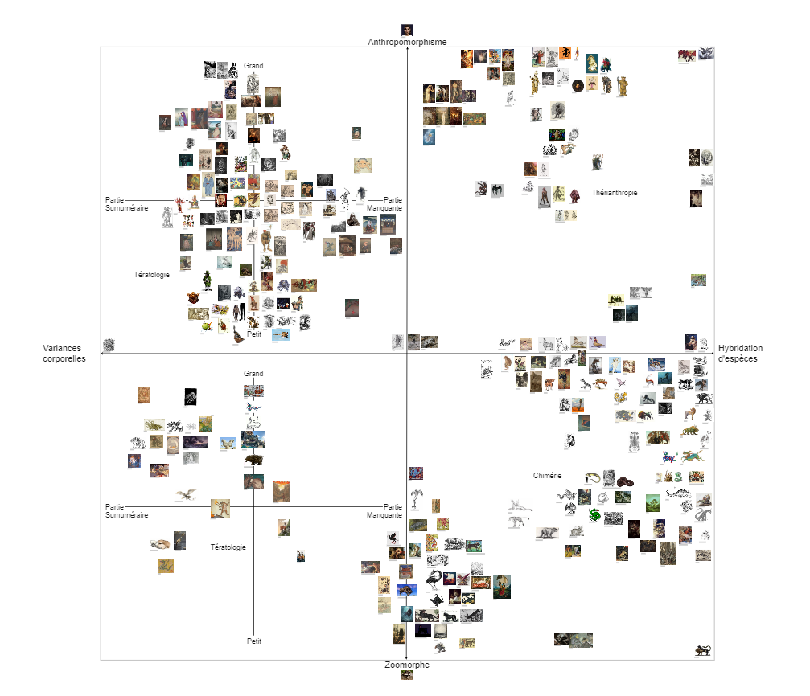
L’axe vertical fait office d’échelle permettant de jauger le degré d’anthropomorphisme ou de zoomorphisme que présente chacune des créatures présentes sur ce tableau. L’homme étant la seule espèce sur terre à avoir développé une culture mythologique, la question de ce que nous considérons comme monstrueux semble être de nature purement anthropocentrique.
Plus la créature se situe haut sur cet axe, plus elle partage des traits communs avec notre espèce. Le choix de ces degrés d’anthropomorphisme s'inspire de certaines études en robotique portant sur le sujet des androïdes et leur degré de ressemblance aux humains.
Dans The Uncanny Valley Effect: Implications on Robotics and A.I. Development, La chercheuse Simone Wong de l’université de Copenhague traite du phénomène de la vallée de l’étrange, un sujet largement discuté en robotique selon lequel les réaction humaines lors de l’observation d’un androïde varient dépendant du degré d’anthropomorphisme que ce robot présente.
De manière similaire aux monstres, ces robots rappelant des formes familières sans être réellement humains provoquent chez nous ces mêmes sentiments de malaise et de fascination. J’établis alors un parallèle entre notre perception des monstres et des androïdes exploitant ces critères permettant de différencier l’homme de la machine afin de définir la frontière entre les créatures anthropomorphes et zoomorphes.
Plus la créature se situe haut sur cet axe, plus elle partage des traits communs avec notre espèce. Le choix de ces degrés d’anthropomorphisme s'inspire de certaines études en robotique portant sur le sujet des androïdes et leur degré de ressemblance aux humains.
Dans The Uncanny Valley Effect: Implications on Robotics and A.I. Development, La chercheuse Simone Wong de l’université de Copenhague traite du phénomène de la vallée de l’étrange, un sujet largement discuté en robotique selon lequel les réaction humaines lors de l’observation d’un androïde varient dépendant du degré d’anthropomorphisme que ce robot présente.
De manière similaire aux monstres, ces robots rappelant des formes familières sans être réellement humains provoquent chez nous ces mêmes sentiments de malaise et de fascination. J’établis alors un parallèle entre notre perception des monstres et des androïdes exploitant ces critères permettant de différencier l’homme de la machine afin de définir la frontière entre les créatures anthropomorphes et zoomorphes.
Les critères sont les suivants, en descendant, passant des traits les plus humains aux plus animaliers :
-Humanoïdes (ogres, nains, vampires)
-Ajout de parties animales sur un corps humain (gorgone, fée, faune)
-Perte du visage humain avec maintien de la bipédie (minotaure, Horus, inugami)
-Perte de la bipédie avec maintien d’un visage humain (harpies, sirènes, centaures)
-Perte de la bipédie et du visage humain (animaux fantastiques)
-Humanoïdes (ogres, nains, vampires)
-Ajout de parties animales sur un corps humain (gorgone, fée, faune)
-Perte du visage humain avec maintien de la bipédie (minotaure, Horus, inugami)
-Perte de la bipédie avec maintien d’un visage humain (harpies, sirènes, centaures)
-Perte de la bipédie et du visage humain (animaux fantastiques)
Graphique des différents degrés d'anthropomorphisme en
fonction du degré de familiarité ou d'étrangetés d'androïdes
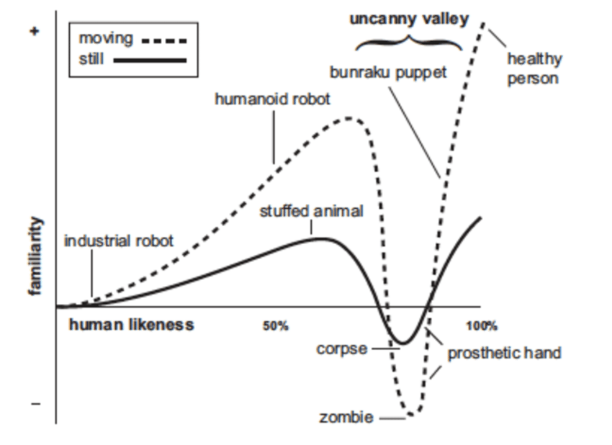
fonction du degré de familiarité ou d'étrangetés d'androïdes
L’axe horizontal permet de séparer les monstres tératologiques des chimères.
On remarque en effet chez les monstres deux courants d’appartenances bien distincts :
-les Créatures tératologiques, qui se caractérisent comme vu précédemment par la présence d’anomalies du développement que présente un corps provenant d’une seule espèce.
-Les créatures chimériques, qui sont composées de différentes parties animales appartenant à des espèces distinctes.
Bien que ces deux types de monstres ne soient pas totalement exclusifs l’un de l’autre, les individus présentant à la fois des caractères chimériques et tératologiques sont rares et je considère que chacune de ces tendances mérite d’être traité séparément.
Ce premier graphique nous permet de former quatre quadrants, chacun comportant des monstres aux spécificités uniques.
Du côté tératologique à gauche nous trouvons :
Les humains tératologiques (cyclope, blemmi, ashura) et Les animaux tératologiques (hydre, kyubi, cerbère)
Et du côté chimérique à droite nous trouvons : Les créatures thérianthropes, ou hommes-animaux (loup-garou, sirène, centaure) et
Les animaux chimériques (griffon, dragon, pégase)
Suite à cette première classification, j’ai décidé d’explorer les différentes facettes du monstre au travers de trois chapitres pouvant être explorés de manière indépendante, chacun conservant toutefois de nombreux axes de communication avec les autres.
Parmi ces chapitres, deux d’entre eux portent sur la dimension physique du monstre et incitent à expérimenter respectivement sur les chimères traitant des créatures composées et sur la tératologie, ou science des individus dont les formes s'écartent d'une norme anatomique.
Je présente au sein de ces deux chapitres le monstre comme une chose, dont les processus de création oscillent entre la composition et la déformation. En explorant les différentes clés d’identifications formelles de ces typologies de monstres, j’élargis par ce biais la réflexion sur la manière dont ces opérations de modifications formelles sont transposables d’individus "vivants" aux individus "techniques", établissant un parallélisme entre les champs de la création de figures fantastiques, de la biologie et de l’objet.
Le troisième chapitre vise à explorer le côté mythologique du monstre et la manière dont ce dernier résonne avec nous par les idées, les concepts et les émotions plutôt que par l’image. Je m’appuie plus particulièrement sur la figure du Croque-mitaine, un monstre conçu par les adultes pour inculquer différentes valeurs aux enfants par le biais du fantastique et de la peur.
Au travers de ces trois axes, je cherche à donner au lecteur la possibilité d’explorer par lui-même les différentes facettes que présente le monstre en lui donnant les clés de décryptage nécessaire pour aborder ce sujet au travers d’une philosophie positive et créative du monstrueux.
On remarque en effet chez les monstres deux courants d’appartenances bien distincts :
-les Créatures tératologiques, qui se caractérisent comme vu précédemment par la présence d’anomalies du développement que présente un corps provenant d’une seule espèce.
-Les créatures chimériques, qui sont composées de différentes parties animales appartenant à des espèces distinctes.
Bien que ces deux types de monstres ne soient pas totalement exclusifs l’un de l’autre, les individus présentant à la fois des caractères chimériques et tératologiques sont rares et je considère que chacune de ces tendances mérite d’être traité séparément.
Ce premier graphique nous permet de former quatre quadrants, chacun comportant des monstres aux spécificités uniques.
Du côté tératologique à gauche nous trouvons :
Les humains tératologiques (cyclope, blemmi, ashura) et Les animaux tératologiques (hydre, kyubi, cerbère)
Et du côté chimérique à droite nous trouvons : Les créatures thérianthropes, ou hommes-animaux (loup-garou, sirène, centaure) et
Les animaux chimériques (griffon, dragon, pégase)
Suite à cette première classification, j’ai décidé d’explorer les différentes facettes du monstre au travers de trois chapitres pouvant être explorés de manière indépendante, chacun conservant toutefois de nombreux axes de communication avec les autres.
Parmi ces chapitres, deux d’entre eux portent sur la dimension physique du monstre et incitent à expérimenter respectivement sur les chimères traitant des créatures composées et sur la tératologie, ou science des individus dont les formes s'écartent d'une norme anatomique.
Je présente au sein de ces deux chapitres le monstre comme une chose, dont les processus de création oscillent entre la composition et la déformation. En explorant les différentes clés d’identifications formelles de ces typologies de monstres, j’élargis par ce biais la réflexion sur la manière dont ces opérations de modifications formelles sont transposables d’individus "vivants" aux individus "techniques", établissant un parallélisme entre les champs de la création de figures fantastiques, de la biologie et de l’objet.
Le troisième chapitre vise à explorer le côté mythologique du monstre et la manière dont ce dernier résonne avec nous par les idées, les concepts et les émotions plutôt que par l’image. Je m’appuie plus particulièrement sur la figure du Croque-mitaine, un monstre conçu par les adultes pour inculquer différentes valeurs aux enfants par le biais du fantastique et de la peur.
Au travers de ces trois axes, je cherche à donner au lecteur la possibilité d’explorer par lui-même les différentes facettes que présente le monstre en lui donnant les clés de décryptage nécessaire pour aborder ce sujet au travers d’une philosophie positive et créative du monstrueux.
J'invite maintenant votre curiosité à choisir un de ces trois chapitres, traitant chacun d'une des différentes facettes du monstre.
Croque-mitaines
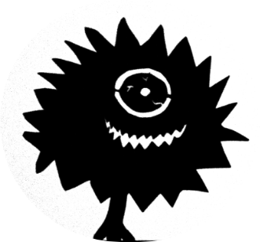
Tératologie

Chimères